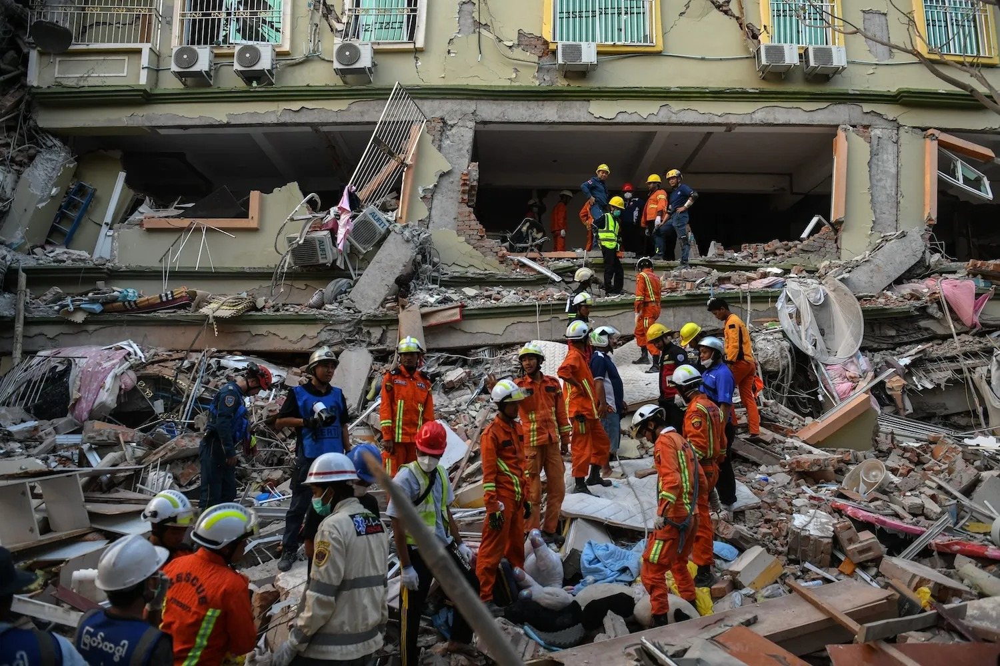
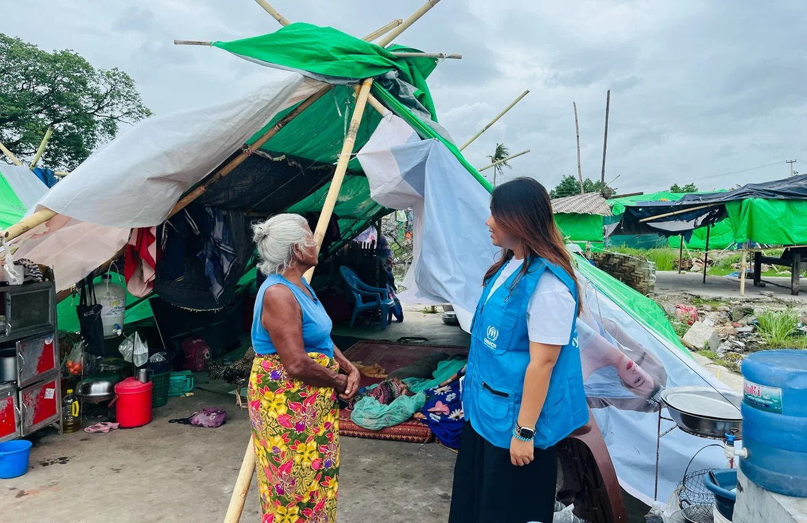
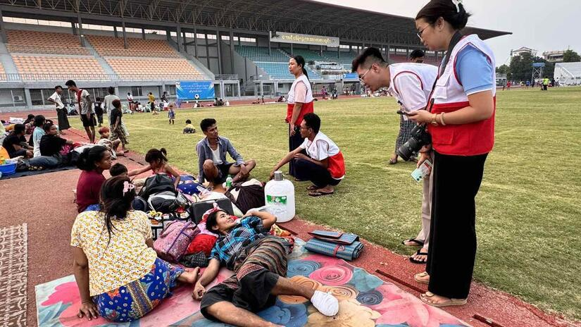
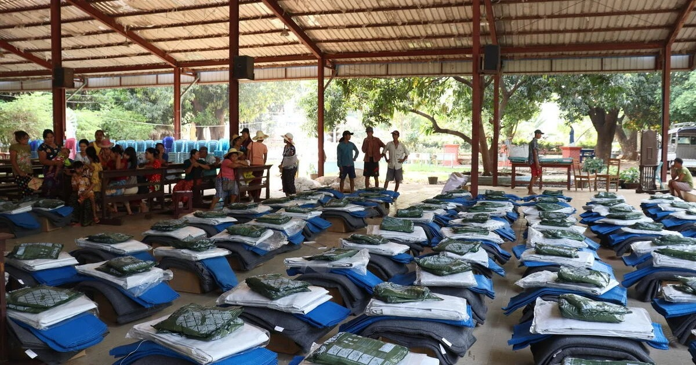
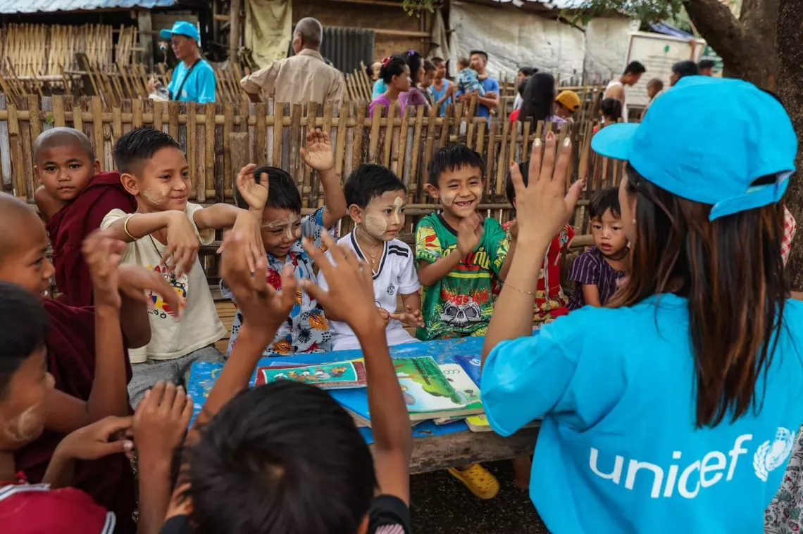
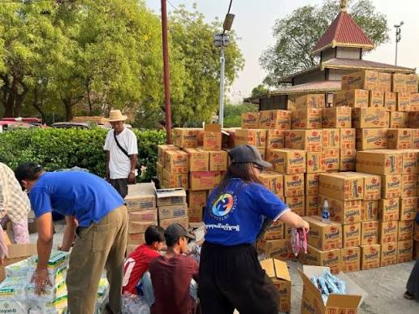
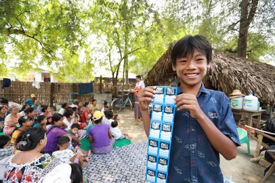
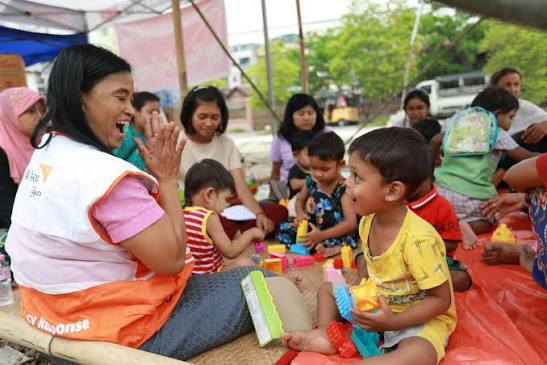
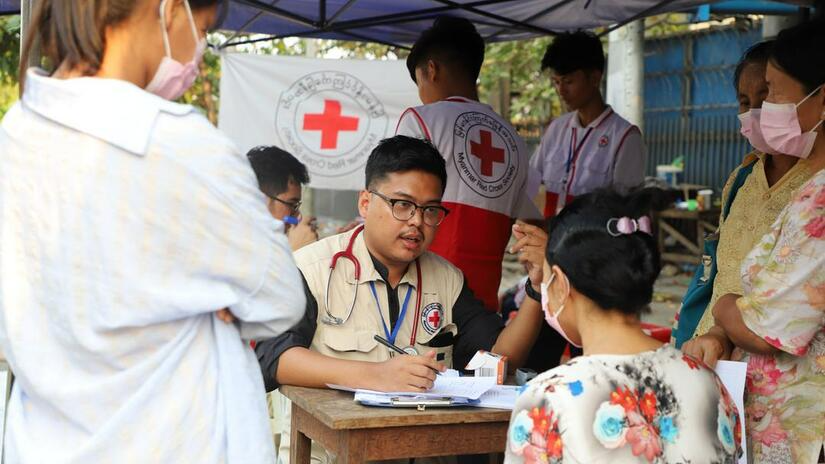
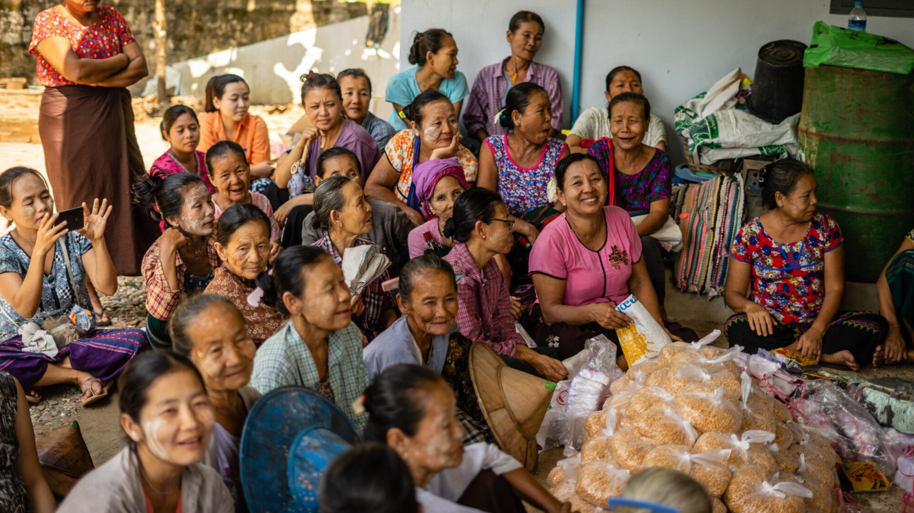

We only suggest trusted, official and verified websites

MOHADM works on humanitarian affairs and disaster management in Myanmar, supporting communities affected by emergencies and disasters through humanitarian coordination and assistance.
https://mohadm.nugmyanmar.org/
UNOPS supports humanitarian and development efforts by helping partners deliver infrastructure, projects, procurement, and essential services in communities affected by crisis.
https://www.unops.org/
IFRC supports emergency response and recovery in Myanmar, including assistance to communities affected by earthquakes and other humanitarian emergencies.
https://www.ifrc.org/emergency/myanmar-earthquake
UNHCR works to protect and assist refugees, displaced people, and other vulnerable communities in Myanmar, providing humanitarian support and protection assistance.
https://www.unhcr.org/mm/
UNICEF works to protect children and provide essential support in Myanmar, including healthcare, nutrition, education, clean water, sanitation, and child protection during humanitarian emergencies.
https://www.unicef.org/myanmar/
The Center for Social Integrity works with communities and partners to promote social inclusion, resilience, peace, and support for people affected by conflict and crisis in Myanmar.
https://www.centerforsocialintegrity.org/
World Vision provides humanitarian and development assistance to vulnerable children and families, including emergency relief, food assistance, healthcare, education, and child protection.
https://www.wvi.org/
Save the Children works to protect children affected by conflict and disasters, providing humanitarian assistance, education, healthcare, food, and child protection support.
https://www.savethechildren.net/
CARE provides humanitarian assistance and works with vulnerable communities affected by conflict, disasters, displacement, food insecurity, and other emergencies.
https://www.care-international.org/
The International Rescue Committee helps people affected by conflict and humanitarian crises by providing emergency assistance, healthcare, protection, education, and support for recovery.
https://www.rescue.org/